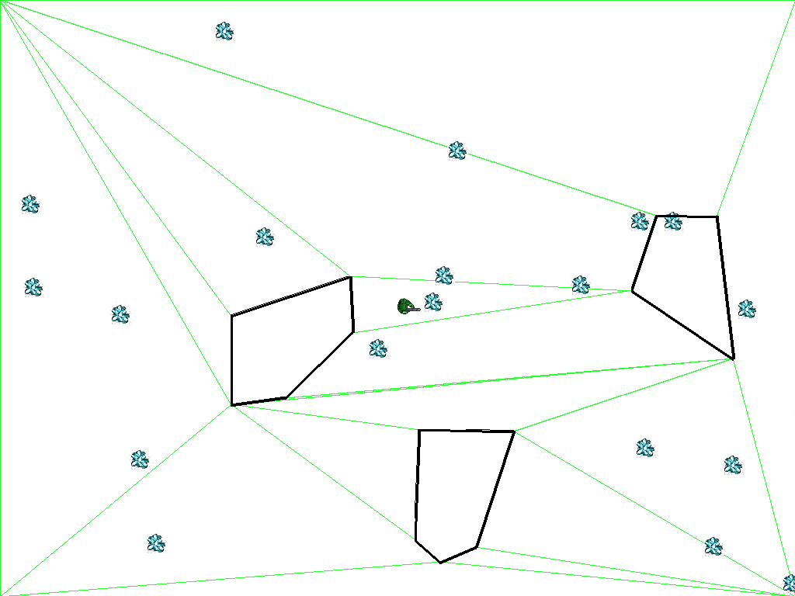
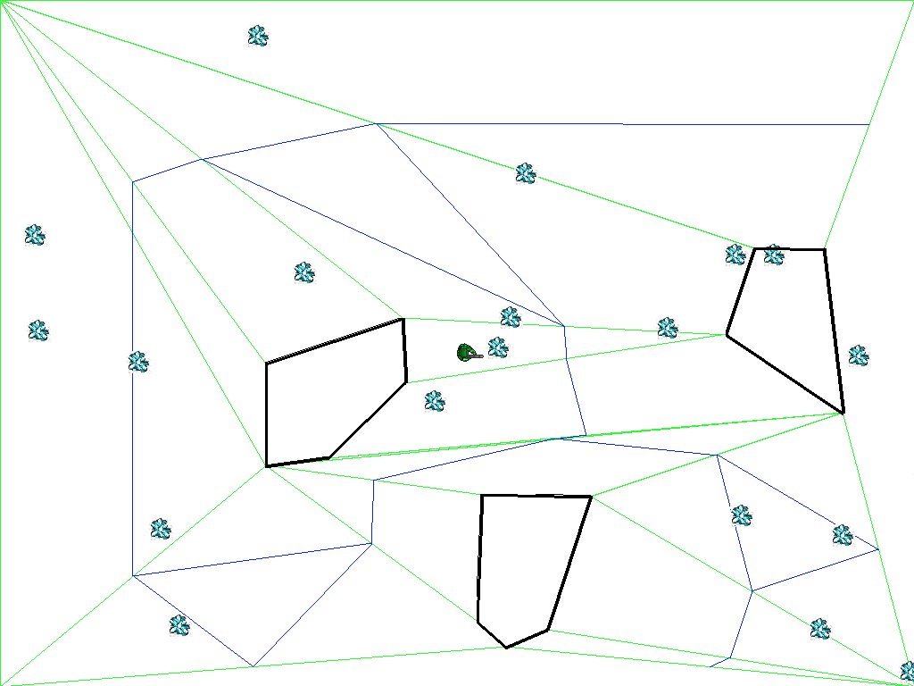

One of the main uses of artificial intelligence in games is to perform path planning, the search for a sequence of movements through the virtual environment that gets an agent from one location to another without running into any obstacles. For now we will assume static obstacles. In order for an agent to engage in path planning, there must be a topography for the agent to traverse that is represented in a form that can be efficiently reasoned about.
Grid topologies discretize the environment and assumes an agent can be in one discrete cell or another. However, for many games such as 1st-person shooters, a more continuous model of space is beneficial. Depending on the granularity of the grid, a lot of space around obstacles becomes inaccessible in grid-based approaches. Finally, grids result in unnecessarily large number of path transitions.
A path network is a set of path nodes and edges that facilitates obstacle avoidance. The path network discretizes a continuous space into a small number of points and edges that allow transitions between points. However, unlike a grid topology, a path network does not require the agent to be at one of the path nodes at all times. The agent can be at any point in the terrain. When the agent needs to move to a different location and an obstacle is in the way, the agent can move to the nearest path node accessible by straight-line movement and then find a path through the edges of the path network to another path node near to the desired destination.
A navigation mesh is a means to automatically identify points at which to place path nodes. A navigation mesh is a set of convex hulls (polygons) overlaid on an environment such that the area within each hull is guaranteed to be obstacle-free. Note the relatively small number of convex hulls needed to map out navigable areas in the figure below. The convexity of the hulls is important because an agent within the area of a hull can move to any other point within the hull without crossing a hull boundary.
Furthermore, when two convex hulls are adjacent to each other (i.e., they share an edge), that edge can be thought of as a "portal"—an invisible door—from one safe navigation region to another. Connecting adjacent convex hulls into a network of safe passages results in a path node network through which an agent can travel between any two points in the environment without fear of collision. That is, a navigation mesh can be used to automatically place path nodes throughout a game map. The resulting network of path nodes creates a super-highway by which an agent can move from any safe area to any other safe area.
There are many ways to convert a navigation mesh into a path node network. In the figure below, I have chosen to place path nodes at the center points of each portal and to generate edges between nodes that are on the same convex hull. This keeps the number of nodes and edges low and ensures that the paths are far away from obstacles. It does create a bit of inefficiency since the path network may take the agent a little bit out of its way. However, there are opportunities to "smooth" the path by taking shortcuts or cutting corners, resulting in conservative but naturalistic-looking navigation.
In this assignment, you will write the code to generate a navigation mesh for an arbitrary environment and to generate a path network for the environment. The path network should work on any given terrain of obstacles and allow the agent to traverse between any two points (as long as there exists a path wide enough for the agent to fit) without colliding with an obstacle.
There are three main challenges of the assignment:
We will test path network using a random-walk navigator that moves the agent to the nearest path node and then follows a randomly generated path—sequence of adjacent path nodes.
Please consult homework 1 for background on the Game Engine. In addition to the information about the game engine provided there, the following elements will be used.
PathNetworkNavigator is defined in core.py. A PathNetworkNavigator is a specialization of a Navigator that works on path networks and contains the smarts for how to get around in the game world. Its primary function is to compute a path between two points that steers the Agent clear of any obstacles.
Member variables:
Member functions:
NavMeshNavigator is defined in core.py. NavMeshNavigator is a specialization of PathNetworkNavigator that automatically constructs a navigation mesh and a path network.
Member variables:
Member functions:
RandomNavMeshNavigator is defined in randomnavmeshnavigator.py. The RandomNavMeshNavigator causes the Agent to perform a random walk of the path network. The random path terminates after 100 path nodes and the Agent moves directly to its destination from the last random point reached. Thus, the Agent can possibly collide with obstacles if random path does not reach the destination before the threshold is reached.
Member functions:
Miscellaneous utility functions are found in utils.py.
To complete this assignment, you must (1) implement code to generate a navigation mesh for an arbitrary game world terrain consisting of obstacles such that an Agent can traverse the environment, and (2) implement code to generate a path node network in the environment. Because we haven't gotten to the part where the Agent can be controlled intelligently, we will use a the RandomNavMeshNavigator, which walks randomly around for a while before proceeding directly to its destination.
To run the project code, use the following commands:
> python runrandomnavigator0.py
> python runrandomnavigator1.py
> python runrandomnavigator2.py
> python runrandomnavigator3.py
> python runrandomnavigator4.py
Modify mycreatepathnetwork.py and complete the myCreatePathNetwork() function. myCreatePathNetwork() must do three things:
myCreatePathNetwork(world, agent) takes in a reference to the GameWorld object and a reference to the agent that will be navigating on the path network. The function returns three values:
Step 1: Find convex hulls.
A simple means of finding convex hulls are to create triangles between the points of Obstacles (and the corners of the map). From any point on any Obstacle, find two other points such that a triangle can be formed through open space. Make sure that any triangle found doesn't overlap with any previously found triangle.
Triangles are guaranteed to be convex hulls, but it is possible to find bigger polygons with n > 3 points that carve out larger parts of the open space. Fewer, more complex convex hulls produce more optimized path networks. Identify adjacent polygons that can be merged together to form larger convex hulls.
Step 2: Place path nodes.
There are many strategies for placing path nodes in navigation meshes. Popular strategies include.
Each strategy has pros and cons. The above strategies can be combined.
Step 3: Create path edges between path nodes.
There are many strategies for doing this. Common strategies include:
One key consideration is to keep the number of edges in the path network as small as possible while ensuring that there is at least one path between all convex hulls that should be reachable from each other. Reducing the complexity of the path network will speed up path search later. Another key consideration is to keep the actual physical distance an agent must travel between any two points as low as possible. These considerations are often in conflict with each other.
We will grade your solution based on three criteria:
Make sure any edge in the path network is traversable by an agent that has physical size. That is, edges in the path network should never come too close to any Obstacle such that an agent blindly following the path edge collides with an Obstacle (or the edges of the map).
When creating triangles, I like to randomly pick points on obstacles and exhaustively find all triangles from that point, then move on to the next random point.
Path nodes can be placed on the edges of the game map.
To submit your solution, upload your modified mycreatepathnetwork.py. All work should be done within this file.
You should not modify any other files in the game engine.
DO NOT upload the entire game engine.